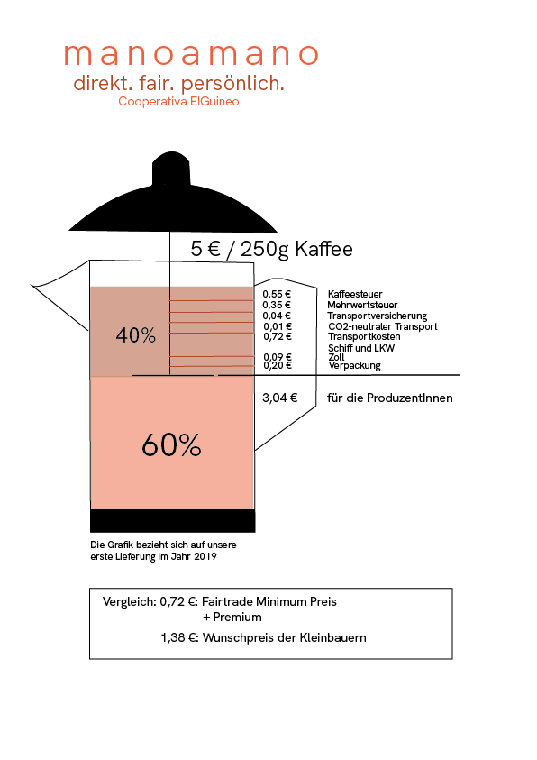

manoamano
Kaffee von Hand zu Hand. direkt. fair. persönlich. Cooperativa El Guineo, Honduras.
Wenn sich Wertschätzung und Wertschöpfung die Hand geben
Hola gente - hallo zusammen!
Vor einigen Wochen haben wir uns mit einem Haufen Menschen zu einer Online-Gesprächsrunde auf Zoom getroffen, um über unser Lieblingsthema zu sprechen: Kaffee - genauer gesagt, über Wertschöpfung und Wertschätzung beim Kaffee(handel).
Unser Ziel war es, die Komponenten von Wertschätzung und Wertschöpfung beim Kaffeehandel genauer zu begreifen und zu verstehen. Und da wir mit manoamano auch die gesamte Coffee-Chain miterleben, von den Bäuer:innen über die Exporteur:innen und Spediteur:innen bis hin zum Verkauf und der Zubereitung für die Endkonsument:innen hier in Deutschland, haben wir uns überlegt, dass wir gerne diese gesamte Kette mit Hilfe unserer Gäst:innen abbilden möchten.
Inwieweit geben sich Wertschöpfung und -schätzung bereits die Hand und was ist in der Zukunft vielleicht noch alles möglich?
Auf unserem Blog findet Ihr Details zu den spannenden Gäst:innen, die die Persprektiven der Cooperativa Rincón Toningo, von Angelique’s Finest und der Kaffeegiesserei in Münster eingebracht haben. Hier nur ein Vorgeschmack: Es ging um Sichtbarkeit, Kaffeehandel als Ökosystem, Wertschöpfung im Anbauland, eigene Marken, Eigenständigkeit, und zugleich herausragende Qualität.
Nach der Veranstaltung verbleiben wir mit vielen neuen Impulsen und Gedanken – und natürlich Vorfreude auf die nächste Fuhre Kaffee! Vorbestellen könnt Ihr wie immer hier. Bis dahin hoffen wir, dass wir vielleicht schon mit weiteren Veranstaltungen anknüpfen können. Wir freuen uns auf vertiefende Gespräche mit Euch!
Mucho amor,
Euer manomano-Team
Das Projekt
direkt. fair. persönlich.
manoamano - von Hand zu Hand. Was mit einem Non-Profit Projekt begann, der Weitblick-Finanzierung eines neuen Grundschulgebäudes in El Guineo, wird zu All-Profit: Lecker duftender Kaffee aus den Berghängen El Guineos für uns und eine faire Entlohnung für die mühevolle Arbeit der Kleinbauer*innen.
Als gemeinnütziger Verein ist es unser Ziel, Euch mit aufrichtigem Kaffee aus Honduras zu versorgen. Gleichzeitig möchten wir auch unsere Bildungsarbeit in Deutschland und in Honduras stärker verwirklichen. Hand in Hand stehen wir für Nachhaltigkeit, ein gerechtes Wirtschaften und Toleranz auf allen Gebieten ein.
Wer bekommt was?
Von uns bekommt Ihr maximale Transparenz und könnt sehen, aus welchen Komponenten sich der Preis für unseren Kaffee zusammensetzt.
Bis der Kaffee in unseren Tassen landet, legt er einen langen Weg zurück. Wir versuchen, die Stationen auf ein Minimum zu reduzieren - auf eine Beziehung zwischen Kleinbauer*innen und Konsument*innen.

der Kaffee
100 % Arabica
Varietät: Ihcafe 900
Röstgrad 2


Die Idee
Wir alle trinken tagtäglich unseren Kaffee. Die Tasse Kaffee gehört für uns zum morgendlichen Ritual, zum Mittagspäuschen und Kuchen. Schließlich ist es das meist verzehrte Getränk Deutschlands. In Honduras haben wir hinter die Kulissen blicken dürfen und somit die andere Seite unseres Konsums kennengelernt.
Basierend auf der Sensibilisierung für entwicklungspolitische Partnerschaft auf Augenhöhe möchten wir nun mit Euch den Schritt von Non-Profit zu All-Profit wagen.
Im März 2019 führte eine Reise der Studierendeninitiative Weitblick Münster e.V. eine kleine Gruppe Studierender nach Honduras in das Bergdorf El Guineo. In dieser stark bewaldeten Region ist der Kaffeeanbau fast ausnahmslos die ausschließliche Einnahmequelle der Bewohner*innen, was bedeutet, dass schon kleine Einbußen in der Ernte gravierende Folgen haben können.
Zum Zeitpunkt des Besuches im März hatte es schon seit 6 Monaten keine Regenfälle mehr gegeben. Da Kaffee eine sehr anspruchsvolle und empfindliche Pflanze ist, sind auch Klimaschwankungen jeglicher Art oft mit hohen Ernteeinbußen verbunden.

Die honduranischen Kleinbauer*innen exportieren fast 90% des Kaffees an Großkonzerne in die USA. Die mühevolle Arbeit unterliegt dabei dem Weltmarktpreis, auf den Produzent*innen keinerlei Einfluss haben. Im März war der Weltmarktpreis zudem so tief gesunken wie zuletzt vor 13 Jahren.
Der herzliche Empfang der Bewohner* innen, kombiniert mit ihrem köstlich duftenden Kaffee, brachte die Bewohner*innen und Studierenden auf eine Idee: Was wäre, wenn wir Kaffee aus El Guineo direkt und ohne Zwischenhändler nach Münster importieren und nicht nur den guten Kaffee, sondern auch die Arbeit der Kleinbauer*innen durch faire Bezahlung wertschätzen würden?
Über uns
El Guineo – San Pedro Sula – Münster
Wir, das sind die Cooperativa El Guineo in Honduras, eine kleine Gruppe Münsteraner Ehrenamtlicher, unterstützende Freunde und Ihr, unsere Kompliz*innen.

Cooperativa El Guineo

In dem kleinen honduranischen Bergdorf El Guineo leben rund 50 Familien, 300 Frauen, Männer und Kinder. Rund 1300 Meter über dem Meeresspiegel, eingerahmt von grünen Wäldern und Kaffeehängen, ist das Leben sehr naturnah und das Zusammenleben solidarisch. Viele Familien sind verwandt.
Für unser Projekt haben sich zunächst acht Familien zu einer Kaffeekooperative zusammengeschlossen. Nach und nach sollen ihr alle 50 Familien beitreten, sodass das gesamte Dorf direkt profitiert.

Vom Einpflanzen der Setzlinge bis zur Röstung führen die Bauer*innen jeden Schritt in Handarbeit selbst durch. Beim Anbau werden keine Pestizide oder synthetischen Düngemittel eingesetzt. Für die Anschaffung besäßen die Kleinbauer*innen gar nicht das nötige Geld.
Sind die Kaffeekirschen im Dezember reif, werden sie von den Familien gepflückt, vom Fruchtfleisch befreit, fermentiert, gewaschen, sortiert, getrocknet, geschält und anschließend geröstet. Dass die Bäuerinnen und Bauern selbst rösten, macht unser Projekt so besonders. So bleibt die gesamte Wertschöpfung vor Ort. Zertifizieren können wir das aber nicht. Dafür haben wir als gemeinnütziger Verein nicht das nötige Geld.


Roberto Kattan

Unser Mann für alles. Eigentlich ist Roberto Zahnarzt, widmet sein ganzes Leben aber den sozialen Projekten. In der Region ist er sehr verwurzelt und den Menschen verbunden. Er hat selbst 2 Jahre dort gewohnt.
Roberto organisiert die Gründung der Kooperative, die faire Verteilung der Entlohnung auf die Familien, koordiniert die Röstung und Verpackung und fährt den Kaffee mit seinem Auto zum Hafen ins 300 km entfernte San Pedro Sula. Und all das ehrenamtlich. Wir sind ihm unendlich dankbar für seine so tatkräftige Unterstützung!
Ein inspirierender Mensch, der die Dörfer kostenlos medizinisch versorgt, Schulmaterialien für 4.000 Kinder organisiert, und und und...

Kompliz*innen in Münster

manoamano – von Hand zu Hand. Dieser Kreis schließt sich in Münster. Eine 10-köpfige Gruppe Münsteraner Ehrenamtlicher kümmert sich darum, dass die Bohnen aus El Guineo verpackt und beschriftet bei Euch landen. Nicht zu vergessen sind die roestbar, Weitblick Münster e.V. sowie die Deutsch-Honduranische Gesellschaft, die uns alle drei auf verschiedenste Art und Weise unterstützen.

Als gemeinnütziger Verein liegt unser Fokus nicht nur auf der Förderung von Entwicklungszusammenarbeit, internationaler Gesinnung und Toleranz, sondern auch auf der Sensibilisierung für nachhaltigen Handel und verantwortungsvollen Genuss von Agrarrohstoffen wie unserem Kaffee.
Erst durch unseren Besuch in El Guineo haben wir die Strukturen globaler Agrarmärkte erkannt. Dadurch haben wir realisiert, dass in diesen Märkten kein Unterschied zwischen Kleinbauer*innen und internationalen Konzernen gemacht wird. Als Kleinbauer*innen im Kaffeehandel aktiv zu sein, das ist keine Aufgabe zu der man sich frei entscheidet, sondern in die man hineingeboren wird. Unsere Reise machte uns Freiheiten, Möglichkeiten, aber auch Risiken und Folgen unserer vernetzten, schnelllebigen Welt bewusst. Es ist an der Zeit, das Wohlergehen der Kleinbauer*innen weltweit gleichermaßen zu schätzen wie das unsere. Hand in Hand möchten wir dieses Bewusstsein in Form unseres fairen, direkten und persönlichen Kaffees weitertragen, aber auch mit vielen Veranstaltungen in Münster.
Unsere Veranstaltungen
Wir sind davon überzeugt, dass ein Umdenken in unserem Konsumverhalten nur durch die nötige Bildung und Informationsweitergabe bewirkt werden kann. Darum ist ein wesentlicher Teil unserer Arbeit, die Organisation von Veranstaltungen in Münster.


Andere über uns
Unser Projekt zieht immer weitere Kreise. Seht nach, was Münster über uns berichtet:
Münstersche ZeitungAntenne Münster


Hand drauf!
Reserviere etwas von unserem Kaffee und werde Kompliz*in der Gemeinnützigkeit.